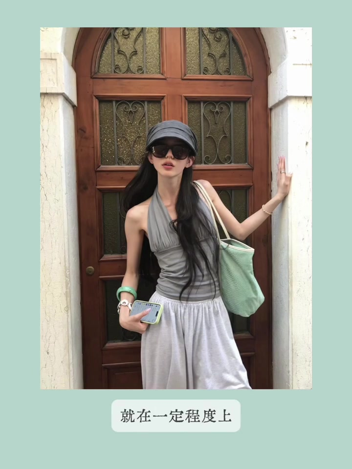
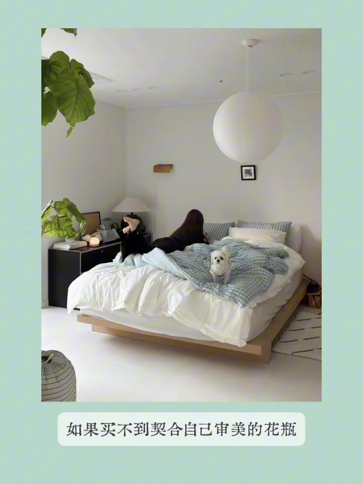
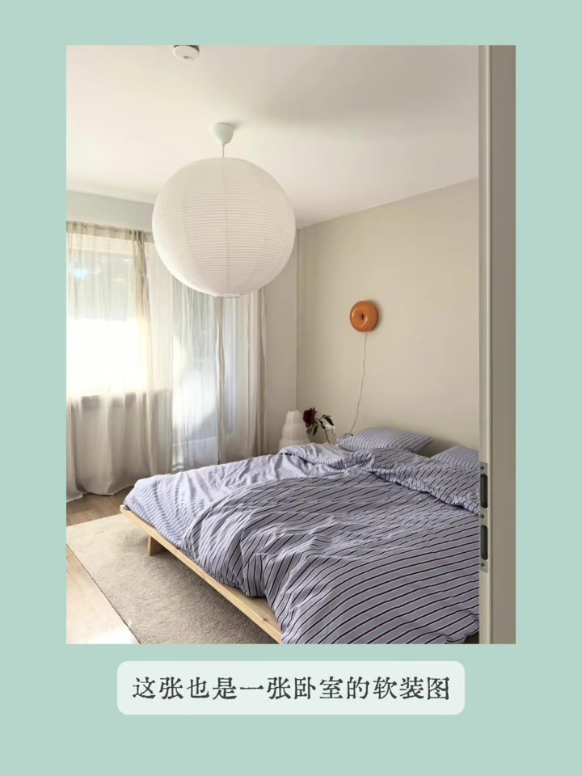
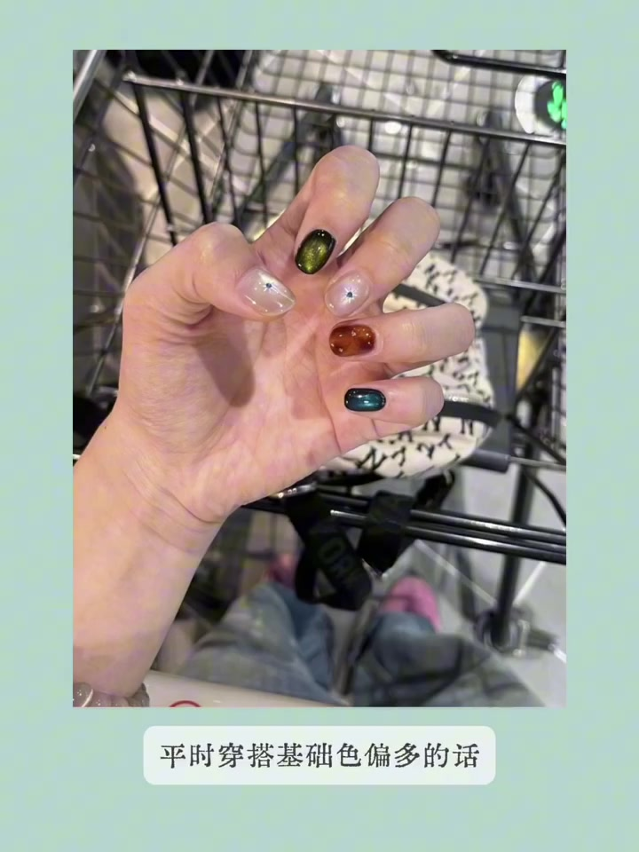
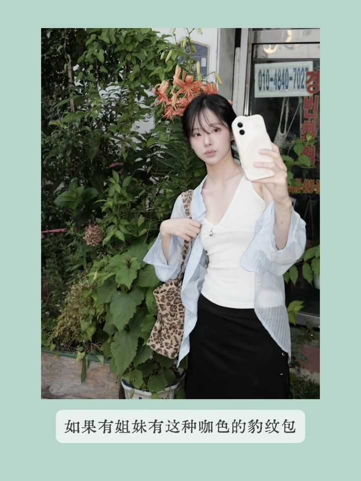

内容要点
视频横跨穿搭、软装、拍照与日常记录：身上大面积基础色时，如何用亮色配饰和撞色背景出片；高眼位女生怎样用复古大框墨镜；家居里绿植花盆包布、卧室彩色小灯、桌垫等软装细节；以及双机自拍、豹纹包配色和手帐式 P 图记录。
知识结构
基础色主体加小面积亮色配饰，背景选与配饰撞色更易出片；高眼位可试复古大框墨镜。
绿、木色、浅蓝床品呼应；花盆外层包布可当「换皮肤」。
双机自拍配墨镜耳机更丰富；白墙可挂中等面积橘黄小灯增温馨。
琥珀猫眼甲、波点桌垫、豹纹包配浅蓝；手帐式拼图记录一天。
这组启发的共同点是「小面积高对比」：基础色打底，用配饰、背景、灯具、桌垫或一块布做出记忆点；拍照和软装都遵循同一逻辑。
基础色穿搭：配饰撞色 + 背景撞色
第一张启发是：若身上大色块都是基础色，可在配饰上加一些小面积亮色；拍照选背景时，也可选与配饰颜色撞色的背景，这样比较容易出片。博主当时一眼被小图吸引，是背景里紫色木门框与女生薄荷绿手腕、薄荷绿包颜色很搭。
高眼位女生：复古大框墨镜模糊比例
另一个启发面向眼位较高的女生：若想再遮住一部分额头，可试复古大框墨镜。这种款式能在一定程度上模糊原生高眼位，让比例更和谐。

家居图：配色呼应 + 花盆包布
第三张是家居图，左边大片绿色与女生家院木色床板、床上浅蓝床品都很搭。近看更有意思：绿植花盆是用条纹布包起来的。博主想到，自己做软装时若买不到合适花瓶或不想换瓶，也可以像博主一样给花瓶外层「穿衣服」，选自己喜欢的布定制一下；像给花盆换皮肤，之后也想尝试。

双机自拍：墨镜 + 耳机让画面更丰富
下一张是较火的自拍方式：有两个手机或跟朋友出门时可拍。这类照片共同点是一定会有墨镜和耳机两个配饰，画面会更丰富一点。

卧室软装：橘黄小灯打破白墙
这也是卧室软装图，点睛在白墙上挂的橘黄色小灯——床品很好，且这盏灯面积不算特别小、也不会很大。若卧室墙壁太空，可以挂这种彩色小灯；与床品大面积颜色结合，温馨又好看。

美甲桌垫、豹纹包与手帐式记录
后面几张涵盖琥珀猫眼美甲、黑白波点桌垫、咖色豹纹包配浅蓝（暖咖豹纹不知如何搭时，配蓝色是较通用的公式）、以及手帐式日常记录：一张图放进一天里做的事、食物、风景和自拍，再加抠图技巧增趣味。桌垫能让托盘拍照告别「食堂感」；喜欢做手帐的姐妹可能会偏爱这种记录方式。
